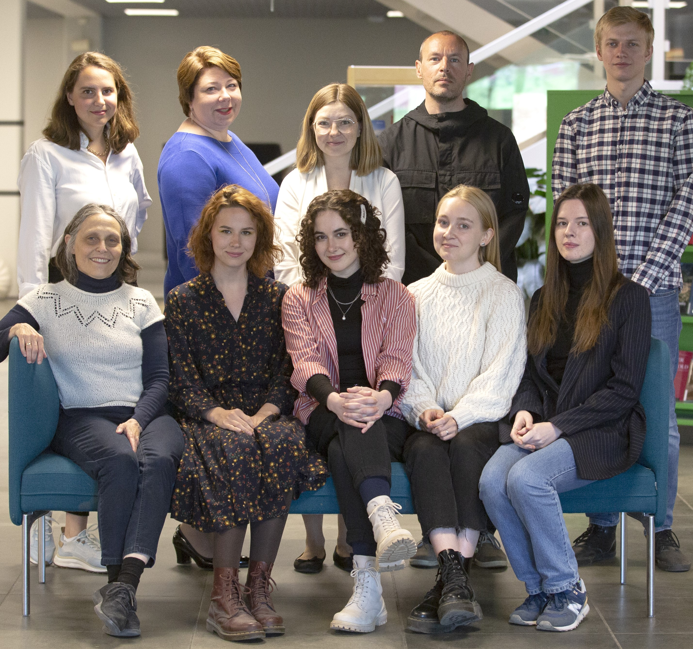

The exercises are grouped by lessons and by functions. Each of the twelve lessons introduces a group of five to six constructions using vocabulary and grammar connected to a given topic. On the page “Lessons” the user can find twelve lessons for topics like Работа (Getting a job), Поход к врачу (Going to the doctor), Внешность (Personal appearance), etc. Each lesson takes approximately 45 minutes to complete and contains 12 to 15 exercises.
Alternatively, one can access the exercises on the page “Functions” where they are grouped according to why they are used: to express one's subjective opinion, to add information, to clarify one's point, etc. The exercises encourage learners to engage in speaking and writing. The constructions are stylistically neutral and can be used in a wide variety of genres and topics.
Our philosophy is that the more you produce Russian on your own, the more you learn (learning-by-doing). You can train in speaking and writing already at early stages of learning Russian. We focus on simple constructions that enrich your language skills, make your speech more fluent, native-like, and give you confidence to engage in conversation.
The team of collaborators includes Anna Endresen, Valentina Zhukova, George Lonshakov, Daria Demidova, Natalia Kalanova, Elena Bjørgve, David Henrik Lavén, Laura A. Janda, Zoia Butenko, Tatiana Perevoshchikova.
The project is administered at UiT The Arctic University of Norway and is supported by the Directorate for Higher Education and Skills of the Norwegian Ministry of Education and Research (HK-dir, https://hkdir.no, the grant UTF-2020/10129).
When using the materials available here, please provide the following citation:
Endresen, Anna, Valentina Zhukova, George Lonshakov, Daria Demidova, Natalia Kalanova, Elena Bjørgve, David Henrik Lavén, Laura A. Janda, Zoia Butenko, Tatiana Perevoshchikova. 2022. Construxercise! Hands-on learning of Russian constructions. A digital educational resource. https://constructicon.github.io/construxercise-rus/
Konstruksjoner er faste språklige strukturer, eller byggesteiner, som brukes for å danne setninger og uttrykk. Morsmålsbrukere anvender ofte konstruksjoner og ordkombinasjoner som kan oppleves fremmede for utenlandske studenter, og dermed vanskelige å mestre.
Som fremmedspråkstudent har du sikkert vært med på å lage helt korrekte setninger, men
etterpå fått høre morsmålsbrukere si: alt er forståelig, det er mulig å uttrykke seg slik, men
ingen snakker på den måten. Poenget er at i språket finnes det som regel allerede en allment
akseptert måte å uttrykke seg på, det vil si ved å bruke faste konstruksjoner. Noen
eksempler på faste konstruksjoner i russisk:
нет-нет да и VP-Pfv, som i setningen Он нет-нет да и спросит "Av og til stiller han et
spørsmål";
(NP-Gen) не напасёшься (на NP-Acc), som i setningen На всех не напасёшься "Ikke
bekymre deg for alle!";
NP-Nom Cop так себе, som i setningen Картина была так себе "Maleriet var så som så";
Хорош VP-Ipfv.Inf!, som i setningen Хорош прыгать! "Slutt å hoppe!"
Typiske konstruksjoner er bygget opp av en fast del og en foranderlig del. For eksempel, i konstruksjonen что касается NP-Gen, то Cl, er ordene «что касается» og «то», faste og kan ikke forandres eller byttes ut. Derimot kan NP-Gen (= substantiv i genitiv kasus og avhengige ord) og Cl (= setning) forandres. Følgelig kan denne konstruksjonen brukes for å danne fullstendige setninger, for eksempel Что касается спорта, я очень люблю бегать "Når det gjelder sport, liker jeg godt å jogge" eller Что касается музыки, то я предпочитаю классику "Når det kommer til musikk, foretrekker jeg klassisk musikk".
Øvelsene er inndelt etter leksjoner og funksjoner. I hver av de tolv leksjonene på siden “Lessons” presenteres 5-6 konstruksjoner. Vokabular og grammatikk i leksjonene tilsvarer et gitt tema, for eksempel: Работа (Arbeid), Поход к врачу (Legetime), Внешность (Utseende) og så videre. Dessuten kan disse konstruksjonene brukes i andre tekster og sammenheng, uansett tema. Hver leksjon består av 12-15 øvelser som tar omtrent 45 minutter å fullføre.
På siden “Functions” er øvelsene inndelt etter funksjoner: выразить мнение (uttrykke meninger), добавить информацию (legge til informasjon), пояснить мысль (forklare en tanke eller mening) og så videre. Alle konstruksjoner er stilistisk nøytrale, og kan brukes i vidt forskjellige emner og sjangre.
Jo mer studentene selvstendig lager egne setninger og tekster på russisk, jo bedre behersker de språket. Det er mulig allerede tidlig i russiskstudiene å aktivt øve på både muntlige og skriftlige ferdigheter. Konstruksjonsøvelsene som vi tilbyr er tilstrekkelig lettforståelige når det gjelder struktur og bruk, samtidig som de beriker språket betraktelig. Dessuten hjelper øvelsene studentene å nå opp til et språknivå mer likt morsmålsbrukere, og skaper dermed selvtillit i samtalesituasjoner.
Vårt team av medarbeidere består av Anna Endresen, Valentina Zhukova, George Lonshakov, Daria Demidova, Natalia Kalanova, Elena Bjørgve, David Henrik Lavén, Laura A. Janda, Zoia Butenko, Tatiana Perevoshchikova.
Dette prosjektet administreres av UiT Norges arktiske universitet og støttes av Direktoratet for høyere utdanning og kompetanse, underlagt Kunnskapsdepartementet. (HK-dir, https://hkdir.no, middel nr. UTF-2020/10129).
Hvis du ønsker å bruke dette materialet, vennligst siter:
Endresen, Anna, Valentina Zhukova, George Lonshakov, Daria Demidova, Natalia Kalanova, Elena Bjørgve, David Henrik Lavén, Laura A. Janda, Zoia Butenko, Tatiana Perevoshchikova. 2022. Construxercise! Hands-on learning of Russian constructions. A digital educational resource. https://constructicon.github.io/construxercise-rus/
Конструкции — это языковые структуры, которые образуют предложения, их части и язык в целом, подобно кирпичикам в здании. Вся речь носителей языка пронизана конструкциями, а для изучающих иностранный язык конструкции далеко не очевидны, и поэтому вызывают многочисленные трудности.
Вам, должно быть, знакома ситуация, когда при изучении иностранного языка вы
составляете предложение по всем правилам, услышав которое носители этого языка
скажут: все понятно, так сказать можно, но так никто не говорит. Как правило, дело в
том, что в языке уже существует общепринятый способ выражения этой мысли — с
помощью определенной конструкции. Примерами русских конструкций являются:
нет-нет да и VP-Pfv, как в предложении Он нет-нет да и спросит
(NP-Gen) не напасёшься (на NP-Acc), как в предложении На всех не напасешься
NP-Nom Cop так себе, как в предложении Картина была так себе
Хорош VP-Ipfv.Inf!, как в предложении Хорош прыгать!
Типичная конструкция имеет фиксированную часть и переменные. Например, в конструкции что касается NP-Gen, то Cl, слова “что касается” и “то” — это фиксированные элементы, а NP-Gen (= имя существительное в родительном падеже с зависимыми словами) и Cl (= клауза, или предложение) — переменные. Так, эта конструкция имеет структуру, которую можно использовать для построения целого предложения, например, Что касается спорта, я очень люблю бегать или Что касается музыки, я предпочитаю классику.
Упражнения сгруппированы по урокам и по функциям. В каждом из 12 уроков на странице “Lessons” вводится 5-6 конструкций. Лексика и грамматика уроков соответствуют заявленным темам: Работа, Поход к врачу, Внешность и т.д. При этом сами конструкции могут использоваться в текстах любой тематики. Каждый урок содержит 12-15 упражнений, выполнение которых занимает около 45 минут.
На странице “Functions” упражнения сгруппированы по функциям, которые конструкции выполняют в тексте: выразить мнение, добавить информацию, пояснить мысль и др. Отобранные конструкции стилистически нейтральны и присутствуют в текстах самых разных жанров.
Чем больше студенты самостоятельно порождают тексты на русском языке, тем лучше они осваивают язык. Активная отработка навыков устной и письменной речи возможна уже на ранних стадиях изучения русского языка. Конструкции, которые мы предлагаем, достаточно просты по структуре и использованию, но значительно обогащают речь, приближают ее к уровню носителей языка и придают уверенности для участия в разговоре.
Анна Эндресен, Валентина Жукова, Георгий Лоншаков, Дарья Демидова, Наталия Каланова, Елена Бьёргве, Давид Хенрик Лавен, Лора А. Янда, Зоя Бутенко, Татьяна Перевощикова
Проект осуществлен в Норвежском Арктическом Университете и поддержан Норвежским управлением по вопросам образования и обучения Министерства Образования и Исследований Норвегии (HK-dir, https://hkdir.no, грант UTF-2020/10129).
При использовании материалов ресурса необходимо приводить следующую ссылку:
Endresen, Anna, Valentina Zhukova, George Lonshakov, Daria Demidova, Natalia Kalanova, Elena Bjørgve, David Henrik Lavén, Laura A. Janda, Zoia Butenko, Tatiana Perevoshchikova. 2022. Construxercise! Hands-on learning of Russian constructions. A digital educational resource. https://constructicon.github.io/construxercise-rus/